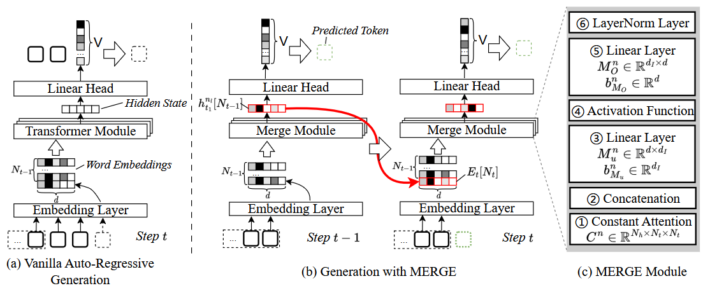

MERGE：快速私有文本生成——用密码学保护AI隐私
1. 背景：LLM推理的隐私困境
当你使用ChatGPT这样的云LLM服务时，你的输入会被发送到服务端，在服务端完成计算后返回结果。这意味着服务提供商可以看到你的所有输入——你的问题、你的数据、甚至你的商业机密。
能不能在不泄露用户输入和模型参数的情况下完成推理？这就是隐私保护推理（private inference）要解决的问题。
2. MERGE：第一个专为NLG设计的隐私推理框架
MERGE基于Secret Sharing和多方安全计算（MPC）。核心思想是：把用户输入和模型参数都"拆分"成多个shares，分发给多个互不勾结的计算方。每一方只能看到自己的share——就像是碎纸片，单独看没有任何信息。但多方合作可以完成完整的推理计算。
之前的工作主要集中在分类模型上。MERGE是第一个专门为自然语言生成（NLG）模型设计的隐私推理框架。
3. 速度是关键
MPC的代价是计算开销大。我们通过一系列优化（包括定制化的Transformer算子、通信压缩、和流水线并行），将推理速度提升了10倍。
4. 论文信息
- 标题: MERGE: Fast Private Text Generation
- 作者: Zi Liang, Pinghui Wang, Ruofei Zhang, Nuo Xu, Shuo Zhang, Lifeng Xing…
- 状态: AAAI 2024
- 代码: https://github.com/liangzid/MERGE
